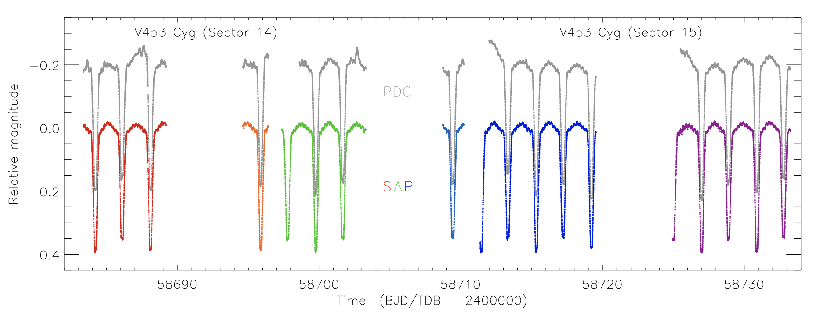
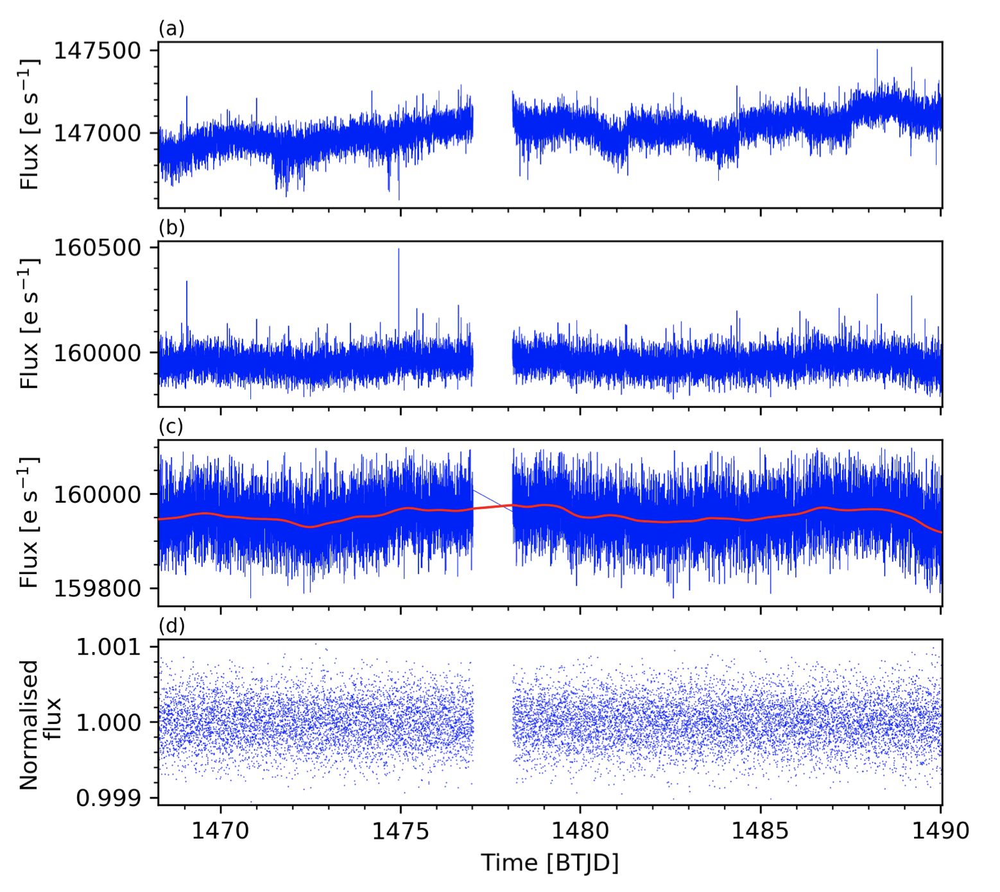

Hello TESS followers and welcome to our third news bulletin! This week it's a big one as we have lots of TESS papers featured on arXiv.org, you have all been very busy!
-
The Pulsation Properties of λ Bootis Stars I. The Southern TESS Sample (Murphy et al., 2020) : This paper uses TESS data/light-curves to analyzes a sample of 70 Southern Hemisphere λ Bootis Stars. From these data the authors identify binaries and determine which of the targets pulsate as δ Scuti stars. Four objects were discovered to be binaries, two heartbeat and two eclipsing. In total 81% of the sample examined pulsate as 948 Scuti stars, this is twice that of normal starts over the same parameter space. Of the λ Bootis Stars examined 40 have TESS 2min cadence data, this was used to determining the temperatures, luminosities and δ Scutii variability of the targets .
-
Optimized cutting off transit algorithm to study stellar rotation from PLATO mission light curves (Almeida et al., 2020) : With in this paper the authors use their DiffeRencial flUx Method of cuTting Off biNariES (DRUM TONES) algorithm to measure the stellar rotation in eclipsing binaries or planetary systems. There are many complications to such a task including disentangling the signal from the stellar rotation from the transit signal of a stellar or sub-stellar companion. The authors apply their method to TESS data as well as that from other missions. Their method shows a good agreement in the determination of stellar rotation periods for the few observed targets.
-
Flare Statistics for Young Stars from a Convolutional Neural Network Analysis of TESS Data (Feinstein et al., 2020) : A convolutional neural network (CNN) called Stella has been trained to find flares in TESS short cadenced data. The CNN was applied to 3200 young stars to evaluate flare rates as a function of age and spectral type. The rotation periods for 1500 targets were also measured and it was found that flares of all amplitudes are present across all spot phases, and as such that the spot coverage is high across the entire surface. The study also examines the flare rates and amplitudes across all stellar ages.
-
Discovery of 946 Cep pulsations in the eclipsing binary V453 Cygni (Southworth et al., 2020) : The paper examines V453 Cyg, an eclipsing binary which contains two stars of mass 14 and 11 M⊙, in an eccentric short period orbit. β Cep type pulsations were discovered within this system, with 7 significant pulses between 2.37 and 10.51 days-1 in the primary. Using TESS data and spectroscopic results the physical properties of the stars were derived to a high precision.
-
TESS Data for Asteroseismology: Timing verification (Essen et al., 2020) : This paper addresses the study of astroseismology with TESS and the need for strong timing requirements. The paper studies the potential consistent drift of TESS in its time keeping and the need for calibration or offsets. A simultaneous study of ground- and space-based primary eclipses of several binary streams in the Southern ecliptic Hemisphere was conducted to verify the reliability of the TESS time stamps. The TESS Barycentric time is 5.8 sec too fast, but consistent with zero at the 2.3 sigma level. The authors also test the existence of a drift with a monotonic growth/decay affecting the observations of all stars. A drift corresponding to sigma_drift = 0.009 sec/day was determined.
-
A possible transit of a disintegrating exoplanet in the nearby multiplanet system DMPP-1 (Jones et al., 2020) : TESS photometry of DMPP-1 is analyzed within this paper. This star is an F8V type and host to hot super Earths and warm Neptunes. A transiting period of 3.29 days is determined with a depth of 87 ppm, shallower than all pervious TESS discoveries.
-
Periodicity search for Pulsar Binaries with TESS (Pal et al.,m 2020) : The TESS data set is used to periodically search for pulsar binary candidates via observation of the flux variation thought to come mainly from the stellar companion. From the TESS data the authors look for flux modulation in five pulsar binaries with reported orbital periods, these include PSR J1023+0038, 3FGL J0523.3-2528, 3FGL J0212.1+5320, 3FGL J0744.1-2523 and PSR J1417-4402. The paper demonstrates how useful TESS data is in identifying the periodicities of redback-like systems. ~

Fig. 1: Taken from Southworth et al., (2020): TESS light curve of V453 Cyg. The PDC data is given in grey and the SAP in the remaining six colors. The colors indicate the division of the data into the six sets for the polynomial normalization functions.

Fig. 2: Taken from Jones et al., (2020): a) TESS Sector 6 SAP flux of DMPP-1, b) the PDC light curve, c) the PDC flux light curve after sigma clipping (blue) and the mean Gaussian Process function (red), d) the cleaned, de-trended and normalized PDC flux used for transit searches.